2. Basic Recipes
The following recipes demonstrate some of the capabilities of the GPIO Zero library. Please note that all recipes are written assuming Python 3. Recipes may work under Python 2, but no guarantees!
2.1. Importing GPIO Zero
In Python, libraries and functions used in a script must be imported by name at the top of the file, with the exception of the functions built into Python by default.
For example, to use the Button interface from GPIO Zero, it
should be explicitly imported:
from gpiozero import Button
Now Button is available directly in your script:
button = Button(2)
Alternatively, the whole GPIO Zero library can be imported:
import gpiozero
In this case, all references to items within GPIO Zero must be prefixed:
button = gpiozero.Button(2)
2.2. Pin Numbering
This library uses Broadcom (BCM) pin numbering for the GPIO pins, as opposed to physical (BOARD) numbering. Unlike in the RPi.GPIO library, this is not configurable. However, translation from other schemes can be used by providing prefixes to pin numbers (see below).
Any pin marked “GPIO” in the diagram below can be used as a pin number. For example, if an LED was attached to “GPIO17” you would specify the pin number as 17 rather than 11:
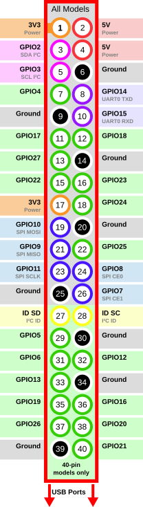
If you wish to use physical (BOARD) numbering you can specify the pin number as “BOARD11”. If you are familiar with the wiringPi pin numbers (another physical layout) you could use “WPI0” instead. Finally, you can specify pins as “header:number”, e.g. “J8:11” meaning physical pin 11 on header J8 (the GPIO header on modern Pis). Hence, the following lines are all equivalent:
>>> led = LED(17)
>>> led = LED("GPIO17")
>>> led = LED("BCM17")
>>> led = LED("BOARD11")
>>> led = LED("WPI0")
>>> led = LED("J8:11")
Note that these alternate schemes are merely translations. If you request the state of a device on the command line, the associated pin number will always be reported in the Broadcom (BCM) scheme:
>>> led = LED("BOARD11")
>>> led
<gpiozero.LED object on pin GPIO17, active_high=True, is_active=False>
Throughout this manual we will use the default integer pin numbers, in the Broadcom (BCM) layout shown above.
2.3. LED
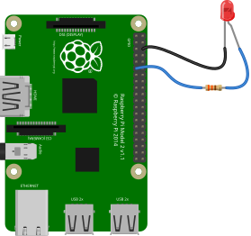
Turn an LED on and off repeatedly:
from gpiozero import LED
from time import sleep
red = LED(17)
while True:
red.on()
sleep(1)
red.off()
sleep(1)
Alternatively:
from gpiozero import LED
from signal import pause
red = LED(17)
red.blink()
pause()
Note
Reaching the end of a Python script will terminate the process and GPIOs
may be reset. Keep your script alive with signal.pause(). See
How do I keep my script running? for more information.
2.4. LED with variable brightness
Any regular LED can have its brightness value set using PWM
(pulse-width-modulation). In GPIO Zero, this can be achieved using
PWMLED using values between 0 and 1:
from gpiozero import PWMLED
from time import sleep
led = PWMLED(17)
while True:
led.value = 0 # off
sleep(1)
led.value = 0.5 # half brightness
sleep(1)
led.value = 1 # full brightness
sleep(1)
Similarly to blinking on and off continuously, a PWMLED can pulse (fade in and out continuously):
from gpiozero import PWMLED
from signal import pause
led = PWMLED(17)
led.pulse()
pause()
2.9. LEDBoard
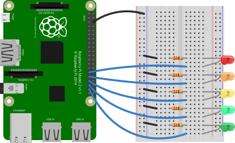
A collection of LEDs can be accessed using LEDBoard:
from gpiozero import LEDBoard
from time import sleep
from signal import pause
leds = LEDBoard(5, 6, 13, 19, 26)
leds.on()
sleep(1)
leds.off()
sleep(1)
leds.value = (1, 0, 1, 0, 1)
sleep(1)
leds.blink()
pause()
Using LEDBoard with pwm=True allows each LED’s brightness to be
controlled:
from gpiozero import LEDBoard
from signal import pause
leds = LEDBoard(5, 6, 13, 19, 26, pwm=True)
leds.value = (0.2, 0.4, 0.6, 0.8, 1.0)
pause()
See more LEDBoard examples in the advanced LEDBoard recipes.
2.10. LEDBarGraph
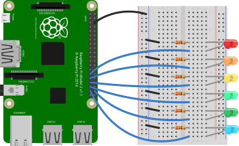
A collection of LEDs can be treated like a bar graph using
LEDBarGraph:
from gpiozero import LEDBarGraph
from time import sleep
graph = LEDBarGraph(5, 6, 13, 19, 26, 20)
graph.value = 1 # (1, 1, 1, 1, 1, 1)
sleep(1)
graph.value = 1/2 # (1, 1, 1, 0, 0, 0)
sleep(1)
graph.value = -1/2 # (0, 0, 0, 1, 1, 1)
sleep(1)
graph.value = 1/4 # (1, 0, 0, 0, 0, 0)
sleep(1)
graph.value = -1 # (1, 1, 1, 1, 1, 1)
sleep(1)
Note values are essentially rounded to account for the fact LEDs can only be on
or off when pwm=False (the default).
However, using LEDBarGraph with pwm=True allows more precise
values using LED brightness:
from gpiozero import LEDBarGraph
from time import sleep
graph = LEDBarGraph(5, 6, 13, 19, 26, pwm=True)
graph.value = 1/10 # (0.5, 0, 0, 0, 0)
sleep(1)
graph.value = 3/10 # (1, 0.5, 0, 0, 0)
sleep(1)
graph.value = -3/10 # (0, 0, 0, 0.5, 1)
sleep(1)
graph.value = 9/10 # (1, 1, 1, 1, 0.5)
sleep(1)
graph.value = 95/100 # (1, 1, 1, 1, 0.75)
sleep(1)
2.11. LEDCharDisplay
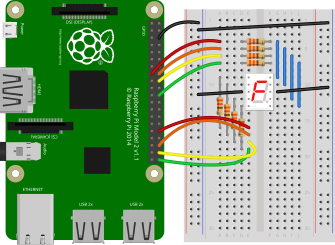
A common 7-segment display can be used to represent a variety of characters
using LEDCharDisplay (which actually supports an arbitrary number of
segments):
from gpiozero import LEDCharDisplay
from time import sleep
display = LEDCharDisplay(21, 20, 16, 22, 23, 24, 12, dp=25)
for char in '321GO':
display.value = char
sleep(1)
display.off()
Alternatively:
from gpiozero import LEDCharDisplay
from signal import pause
display = LEDCharDisplay(21, 20, 16, 22, 23, 24, 12, dp=25)
display.source_delay = 1
display.source = '321GO '
pause()
See a multi-character example in the advanced recipes chapter.
2.12. Traffic Lights
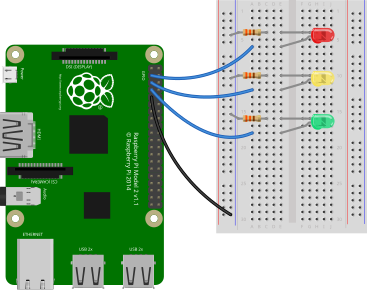
A full traffic lights system.
Using a TrafficLights kit like Pi-Stop:
from gpiozero import TrafficLights
from time import sleep
lights = TrafficLights(2, 3, 4)
lights.green.on()
while True:
sleep(10)
lights.green.off()
lights.amber.on()
sleep(1)
lights.amber.off()
lights.red.on()
sleep(10)
lights.amber.on()
sleep(1)
lights.green.on()
lights.amber.off()
lights.red.off()
Alternatively:
from gpiozero import TrafficLights
from time import sleep
from signal import pause
lights = TrafficLights(2, 3, 4)
def traffic_light_sequence():
while True:
yield (0, 0, 1) # green
sleep(10)
yield (0, 1, 0) # amber
sleep(1)
yield (1, 0, 0) # red
sleep(10)
yield (1, 1, 0) # red+amber
sleep(1)
lights.source = traffic_light_sequence()
pause()
Using LED components:
from gpiozero import LED
from time import sleep
red = LED(2)
amber = LED(3)
green = LED(4)
green.on()
amber.off()
red.off()
while True:
sleep(10)
green.off()
amber.on()
sleep(1)
amber.off()
red.on()
sleep(10)
amber.on()
sleep(1)
green.on()
amber.off()
red.off()
2.14. Reaction Game
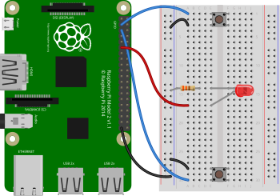
When you see the light come on, the first person to press their button wins!
from gpiozero import Button, LED
from time import sleep
import random
led = LED(17)
player_1 = Button(2)
player_2 = Button(3)
time = random.uniform(5, 10)
sleep(time)
led.on()
while True:
if player_1.is_pressed:
print("Player 1 wins!")
break
if player_2.is_pressed:
print("Player 2 wins!")
break
led.off()
See Quick Reaction Game for a full resource.
2.15. GPIO Music Box
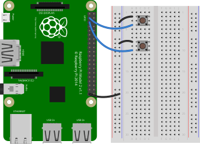
Each button plays a different sound!
from gpiozero import Button
import pygame.mixer
from pygame.mixer import Sound
from signal import pause
pygame.mixer.init()
button_sounds = {
Button(2): Sound("samples/drum_tom_mid_hard.wav"),
Button(3): Sound("samples/drum_cymbal_open.wav"),
}
for button, sound in button_sounds.items():
button.when_pressed = sound.play
pause()
See GPIO Music Box for a full resource.
2.16. All on when pressed
While the button is pressed down, the buzzer and all the lights come on.
from gpiozero import FishDish
from signal import pause
fish = FishDish()
fish.button.when_pressed = fish.on
fish.button.when_released = fish.off
pause()
Ryanteck TrafficHat:
from gpiozero import TrafficHat
from signal import pause
th = TrafficHat()
th.button.when_pressed = th.on
th.button.when_released = th.off
pause()
Using LED, Buzzer, and Button components:
from gpiozero import LED, Buzzer, Button
from signal import pause
button = Button(2)
buzzer = Buzzer(3)
red = LED(4)
amber = LED(5)
green = LED(6)
things = [red, amber, green, buzzer]
def things_on():
for thing in things:
thing.on()
def things_off():
for thing in things:
thing.off()
button.when_pressed = things_on
button.when_released = things_off
pause()
2.17. Full color LED
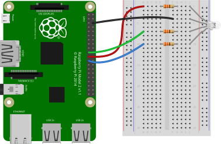
Making colours with an RGBLED:
from gpiozero import RGBLED
from time import sleep
led = RGBLED(red=9, green=10, blue=11)
led.red = 1 # full red
sleep(1)
led.red = 0.5 # half red
sleep(1)
led.color = (0, 1, 0) # full green
sleep(1)
led.color = (1, 0, 1) # magenta
sleep(1)
led.color = (1, 1, 0) # yellow
sleep(1)
led.color = (0, 1, 1) # cyan
sleep(1)
led.color = (1, 1, 1) # white
sleep(1)
led.color = (0, 0, 0) # off
sleep(1)
# slowly increase intensity of blue
for n in range(100):
led.blue = n/100
sleep(0.1)
2.18. Motion sensor
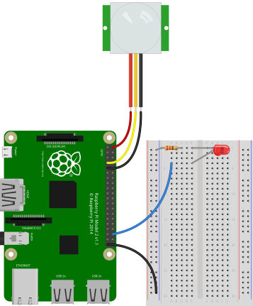
Light an LED when a MotionSensor detects motion:
from gpiozero import MotionSensor, LED
from signal import pause
pir = MotionSensor(4)
led = LED(16)
pir.when_motion = led.on
pir.when_no_motion = led.off
pause()
2.19. Light sensor
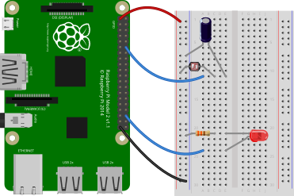
Have a LightSensor detect light and dark:
from gpiozero import LightSensor
sensor = LightSensor(18)
while True:
sensor.wait_for_light()
print("It's light! :)")
sensor.wait_for_dark()
print("It's dark :(")
Run a function when the light changes:
from gpiozero import LightSensor, LED
from signal import pause
sensor = LightSensor(18)
led = LED(16)
sensor.when_dark = led.on
sensor.when_light = led.off
pause()
Or make a PWMLED change brightness according to the detected light
level:
from gpiozero import LightSensor, PWMLED
from signal import pause
sensor = LightSensor(18)
led = PWMLED(16)
led.source = sensor
pause()
2.20. Distance sensor
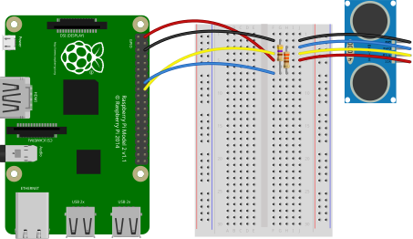
Note
In the diagram above, the wires leading from the sensor to the breadboard can be omitted; simply plug the sensor directly into the breadboard facing the edge (unfortunately this is difficult to illustrate in the diagram without the sensor’s diagram obscuring most of the breadboard!)
Have a DistanceSensor detect the distance to the nearest object:
from gpiozero import DistanceSensor
from time import sleep
sensor = DistanceSensor(23, 24)
while True:
print('Distance to nearest object is', sensor.distance, 'm')
sleep(1)
Run a function when something gets near the sensor:
from gpiozero import DistanceSensor, LED
from signal import pause
sensor = DistanceSensor(23, 24, max_distance=1, threshold_distance=0.2)
led = LED(16)
sensor.when_in_range = led.on
sensor.when_out_of_range = led.off
pause()
2.21. Rotary encoder
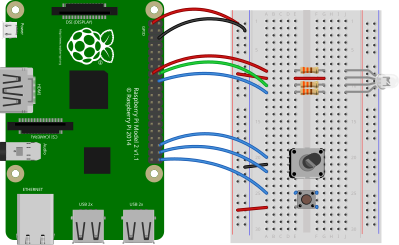
Note
In this recipe, I’ve used a common anode RGB LED. Often, Pi projects use common cathode RGB LEDs because they’re slightly easier to think about electrically. However, in this case all three components can be found in an illuminated rotary encoder which incorporates a common anode RGB LED, and a momentary push button. This is also the reason for the button being wired active-low, contrary to most other examples in this documentation.
For the sake of clarity, the diagram shows the three separate components, but this same circuit will work equally well with this commonly available illuminated rotary encoder instead.
Have a RotaryEncoder, an RGBLED, and Button act as a
color picker:
from threading import Event
from colorzero import Color
from gpiozero import RotaryEncoder, RGBLED, Button
rotor = RotaryEncoder(16, 20, wrap=True, max_steps=180)
rotor.steps = -180
led = RGBLED(22, 23, 24, active_high=False)
btn = Button(21, pull_up=False)
led.color = Color('#f00')
done = Event()
def change_hue():
# Scale the rotor steps (-180..180) to 0..1
hue = (rotor.steps + 180) / 360
led.color = Color(h=hue, s=1, v=1)
def show_color():
print(f'Hue {led.color.hue.deg:.1f}° = {led.color.html}')
def stop_script():
print('Exiting')
done.set()
print('Select a color by turning the knob')
rotor.when_rotated = change_hue
print('Push the button to see the HTML code for the color')
btn.when_released = show_color
print('Hold the button to exit')
btn.when_held = stop_script
done.wait()
2.22. Servo
Control a Servo between its minimum, mid-point and maximum positions
in sequence:
from gpiozero import Servo
from time import sleep
servo = Servo(17)
while True:
servo.min()
sleep(2)
servo.mid()
sleep(2)
servo.max()
sleep(2)
Use a button to control the Servo between its minimum and maximum
positions:
from gpiozero import Servo, Button
servo = Servo(17)
btn = Button(14)
while True:
servo.min()
btn.wait_for_press()
servo.max()
btn.wait_for_press()
Automate the Servo to continuously slowly sweep:
from gpiozero import Servo
from gpiozero.tools import sin_values
from signal import pause
servo = Servo(17)
servo.source = sin_values()
servo.source_delay = 0.1
pause()
Use AngularServo so you can specify an angle:
from gpiozero import AngularServo
from time import sleep
servo = AngularServo(17, min_angle=-90, max_angle=90)
while True:
servo.angle = -90
sleep(2)
servo.angle = -45
sleep(2)
servo.angle = 0
sleep(2)
servo.angle = 45
sleep(2)
servo.angle = 90
sleep(2)
2.23. Motors
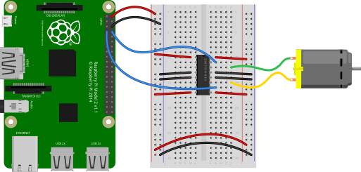
Spin a Motor around forwards and backwards:
from gpiozero import Motor
from time import sleep
motor = Motor(forward=4, backward=14)
while True:
motor.forward()
sleep(5)
motor.backward()
sleep(5)
2.24. Robot
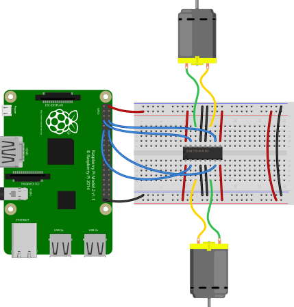
Make a Robot drive around in (roughly) a square:
from gpiozero import Robot, Motor
from time import sleep
robot = Robot(left=Motor(4, 14), right=Motor(17, 18))
for i in range(4):
robot.forward()
sleep(10)
robot.right()
sleep(1)
Make a Robot with a DistanceSensor that runs away when things
get within 20cm of it:
from gpiozero import Robot, Motor, DistanceSensor
from signal import pause
sensor = DistanceSensor(23, 24, max_distance=1, threshold_distance=0.2)
robot = Robot(left=Motor(4, 14), right=Motor(17, 18))
sensor.when_in_range = robot.backward
sensor.when_out_of_range = robot.stop
pause()
2.26. Keyboard controlled robot
Use up/down/left/right keys to control a Robot:
import curses
from gpiozero import Robot, Motor
robot = Robot(left=Motor(4, 14), right=Motor(17, 18))
actions = {
curses.KEY_UP: robot.forward,
curses.KEY_DOWN: robot.backward,
curses.KEY_LEFT: robot.left,
curses.KEY_RIGHT: robot.right,
}
def main(window):
next_key = None
while True:
curses.halfdelay(1)
if next_key is None:
key = window.getch()
else:
key = next_key
next_key = None
if key != -1:
# KEY PRESSED
curses.halfdelay(3)
action = actions.get(key)
if action is not None:
action()
next_key = key
while next_key == key:
next_key = window.getch()
# KEY RELEASED
robot.stop()
curses.wrapper(main)
Note
This recipe uses the standard curses module. This module requires
that Python is running in a terminal in order to work correctly, hence this
recipe will not work in environments like IDLE.
If you prefer a version that works under IDLE, the following recipe should suffice:
from gpiozero import Robot, Motor
from evdev import InputDevice, list_devices, ecodes
robot = Robot(left=Motor(4, 14), right=Motor(17, 18))
# Get the list of available input devices
devices = [InputDevice(device) for device in list_devices()]
# Filter out everything that's not a keyboard. Keyboards are defined as any
# device which has keys, and which specifically has keys 1..31 (roughly Esc,
# the numeric keys, the first row of QWERTY plus a few more) and which does
# *not* have key 0 (reserved)
must_have = {i for i in range(1, 32)}
must_not_have = {0}
devices = [
dev
for dev in devices
for keys in (set(dev.capabilities().get(ecodes.EV_KEY, [])),)
if must_have.issubset(keys)
and must_not_have.isdisjoint(keys)
]
# Pick the first keyboard
keyboard = devices[0]
keypress_actions = {
ecodes.KEY_UP: robot.forward,
ecodes.KEY_DOWN: robot.backward,
ecodes.KEY_LEFT: robot.left,
ecodes.KEY_RIGHT: robot.right,
}
for event in keyboard.read_loop():
if event.type == ecodes.EV_KEY and event.code in keypress_actions:
if event.value == 1: # key pressed
keypress_actions[event.code]()
if event.value == 0: # key released
robot.stop()
Note
This recipe uses the third-party evdev module. Install this library
with sudo pip3 install evdev first. Be aware that evdev will only
work with local input devices; this recipe will not work over SSH.
2.27. Motion sensor robot
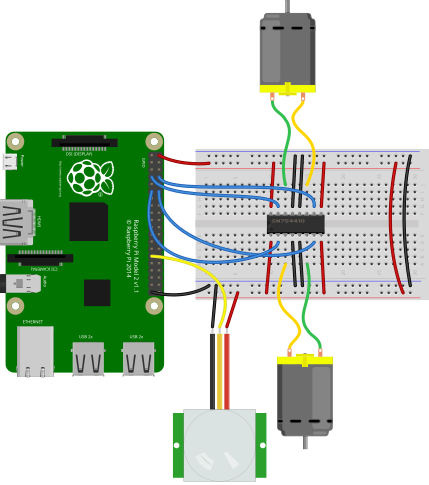
Make a robot drive forward when it detects motion:
from gpiozero import Robot, Motor, MotionSensor
from signal import pause
robot = Robot(left=Motor(4, 14), right=Motor(17, 18))
pir = MotionSensor(5)
pir.when_motion = robot.forward
pir.when_no_motion = robot.stop
pause()
Alternatively:
from gpiozero import Robot, Motor, MotionSensor
from gpiozero.tools import zip_values
from signal import pause
robot = Robot(left=Motor(4, 14), right=Motor(17, 18))
pir = MotionSensor(5)
robot.source = zip_values(pir, pir)
pause()
2.28. Potentiometer
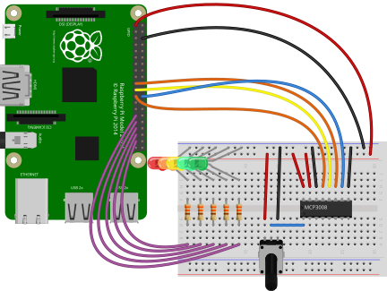
Continually print the value of a potentiometer (values between 0 and 1)
connected to a MCP3008 analog to digital converter:
from gpiozero import MCP3008
pot = MCP3008(channel=0)
while True:
print(pot.value)
Present the value of a potentiometer on an LED bar graph using PWM to represent states that won’t “fill” an LED:
from gpiozero import LEDBarGraph, MCP3008
from signal import pause
graph = LEDBarGraph(5, 6, 13, 19, 26, pwm=True)
pot = MCP3008(channel=0)
graph.source = pot
pause()
2.29. Measure temperature with an ADC
Wire a TMP36 temperature sensor to the first channel of an MCP3008
analog to digital converter:
from gpiozero import MCP3008
from time import sleep
def convert_temp(gen):
for value in gen:
yield (value * 3.3 - 0.5) * 100
adc = MCP3008(channel=0)
for temp in convert_temp(adc.values):
print('The temperature is', temp, 'C')
sleep(1)
2.30. Full color LED controlled by 3 potentiometers
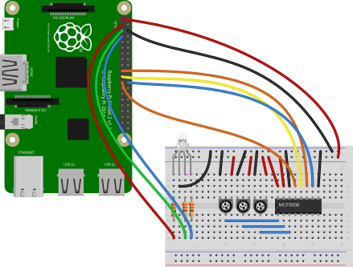
Wire up three potentiometers (for red, green and blue) and use each of their values to make up the colour of the LED:
from gpiozero import RGBLED, MCP3008
led = RGBLED(red=2, green=3, blue=4)
red_pot = MCP3008(channel=0)
green_pot = MCP3008(channel=1)
blue_pot = MCP3008(channel=2)
while True:
led.red = red_pot.value
led.green = green_pot.value
led.blue = blue_pot.value
Alternatively, the following example is identical, but uses the
source property rather than a while loop:
from gpiozero import RGBLED, MCP3008
from gpiozero.tools import zip_values
from signal import pause
led = RGBLED(2, 3, 4)
red_pot = MCP3008(0)
green_pot = MCP3008(1)
blue_pot = MCP3008(2)
led.source = zip_values(red_pot, green_pot, blue_pot)
pause()
2.31. Timed heat lamp
If you have a pet (e.g. a tortoise) which requires a heat lamp to be switched
on for a certain amount of time each day, you can use an Energenie Pi-mote
to remotely control the lamp, and the TimeOfDay class to control the
timing:
from gpiozero import Energenie, TimeOfDay
from datetime import time
from signal import pause
lamp = Energenie(1)
daytime = TimeOfDay(time(8), time(20))
daytime.when_activated = lamp.on
daytime.when_deactivated = lamp.off
pause()
2.32. Internet connection status indicator
You can use a pair of green and red LEDs to indicate whether or not your
internet connection is working. Simply use the PingServer class to
identify whether a ping to google.com is successful. If successful, the green
LED is lit, and if not, the red LED is lit:
from gpiozero import LED, PingServer
from gpiozero.tools import negated
from signal import pause
green = LED(17)
red = LED(18)
google = PingServer('google.com')
google.when_activated = green.on
google.when_deactivated = green.off
red.source = negated(green)
pause()
2.33. CPU Temperature Bar Graph
You can read the Raspberry Pi’s own CPU temperature using the built-in
CPUTemperature class, and display this on a “bar graph” of LEDs:
from gpiozero import LEDBarGraph, CPUTemperature
from signal import pause
cpu = CPUTemperature(min_temp=50, max_temp=90)
leds = LEDBarGraph(2, 3, 4, 5, 6, 7, 8, pwm=True)
leds.source = cpu
pause()
2.34. More recipes
Continue to: